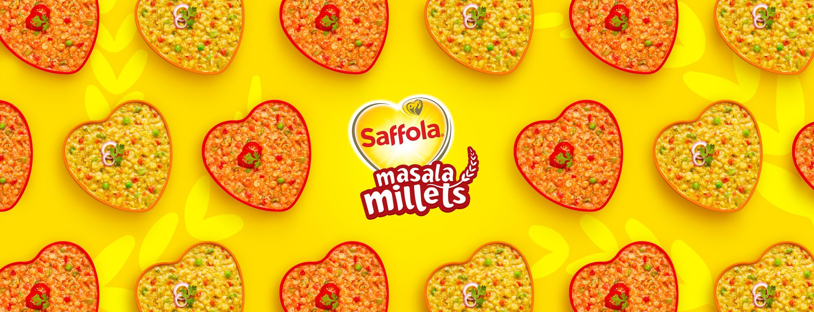
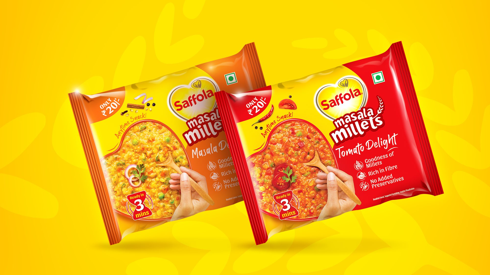
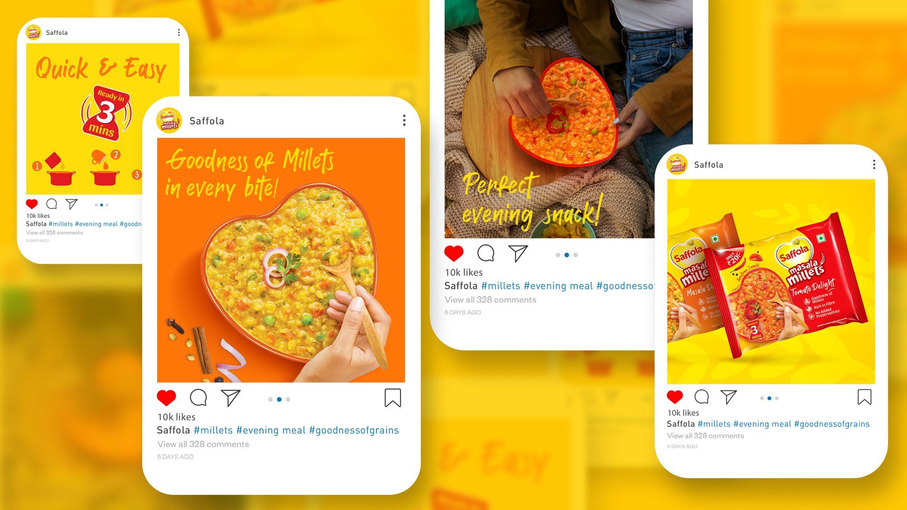
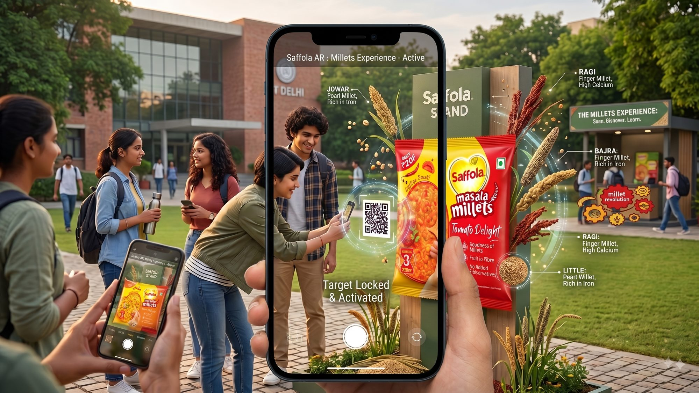
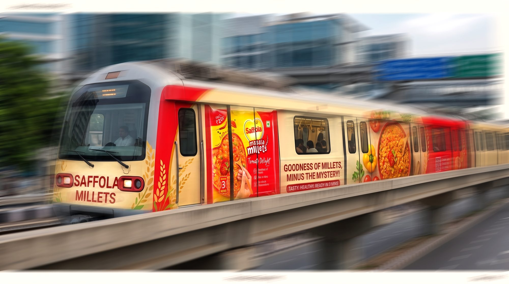

Branding, packaging and photography direction for Saffola's push into millet snacking.
Elephant Design, Pune
Saffola is known for health; it's been India's #1 oats brand for years. When they decided to get into millets too, the job was to take a grain most people think of as bland diet food or something their grandmother cooked, and turn it into a 3-minute snack families would actually reach for.
Outside South India, most people don't really know what to do with millets. They assume they take forever to cook, taste bland, or both. The pack had to make you hungry just looking at it, sell "quick" as hard as it sold "healthy," and still feel unmistakably like Saffola.





Campus AR activation and metro OOH extension.
Built to make millets feel less like diet food you're obligated to eat, and more like something you'd actually reach for on a hungry evening.